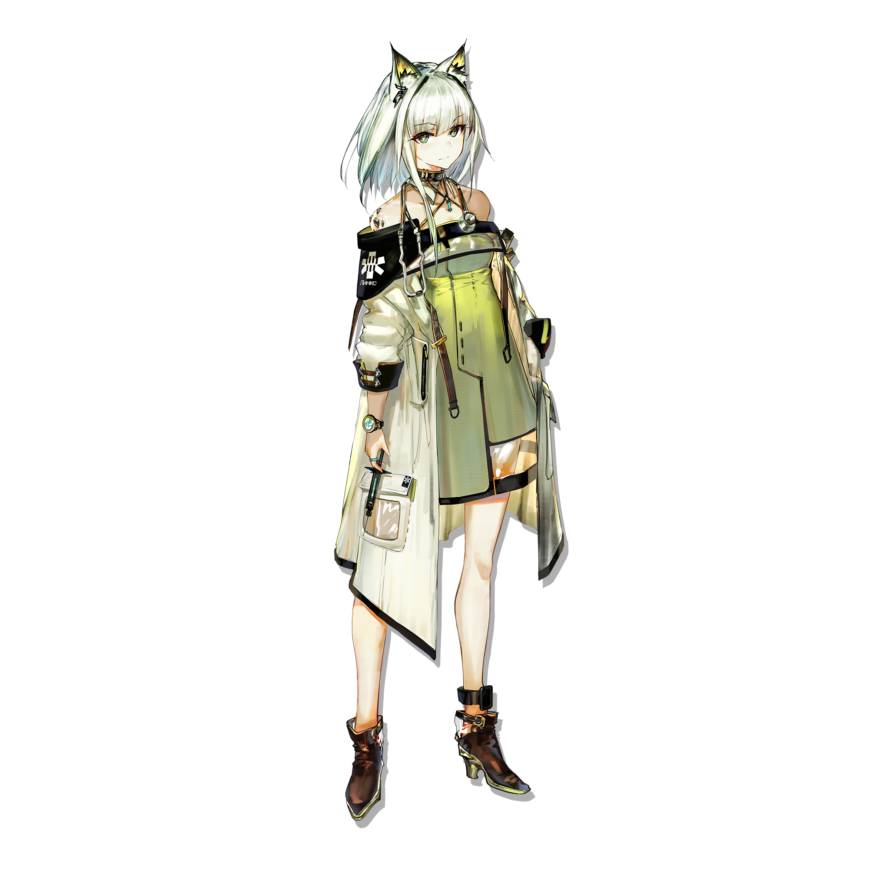
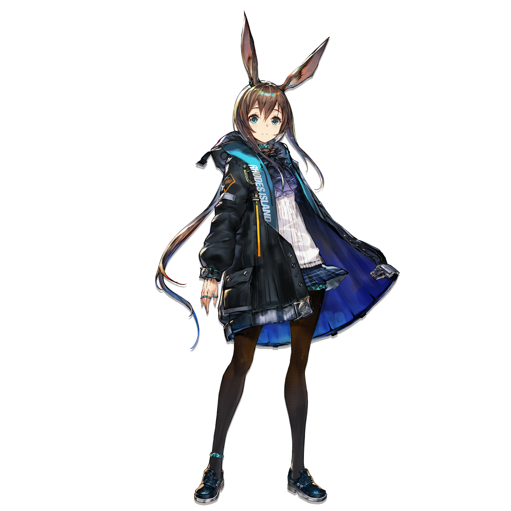
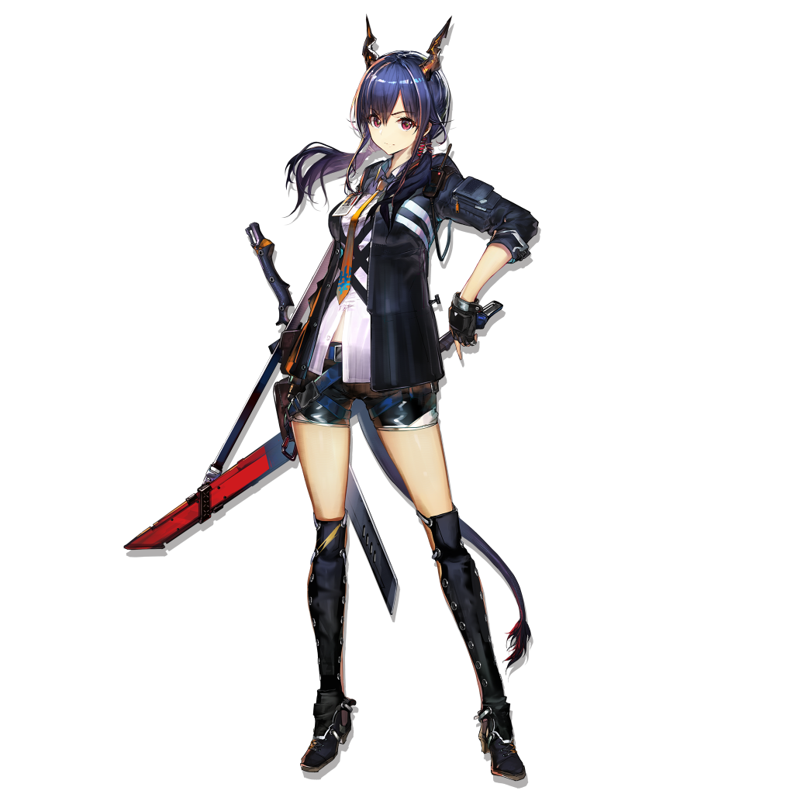
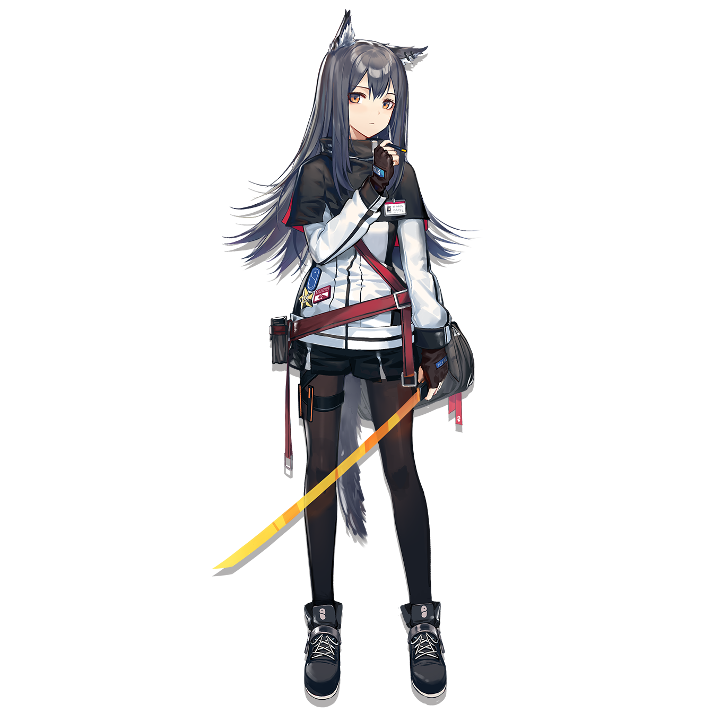
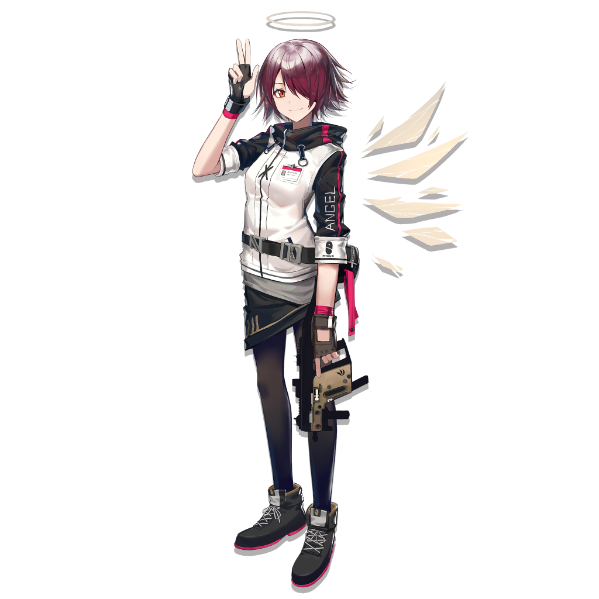
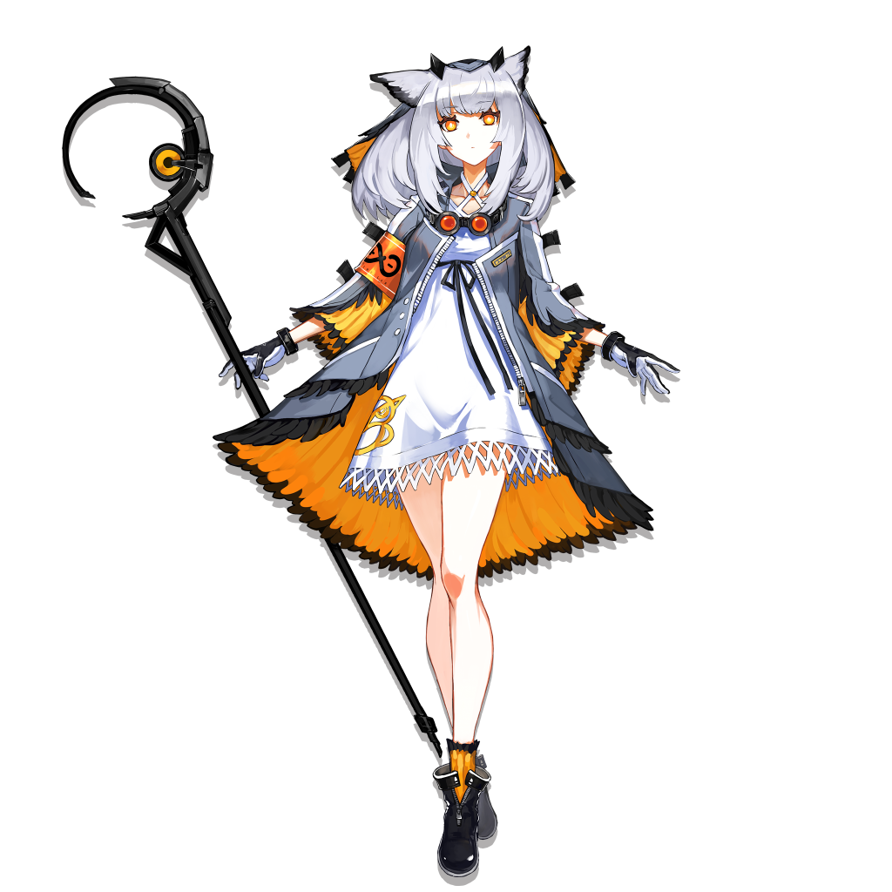

KAL'TSIT
凯尔希
罗德岛最高管理者之一，米娜的直接辅助者。
罗德岛医疗部门的总负责人。
作为罗德岛的老成员，凯尔希医生是在阿米娜
背后最稳固的援护者。

AMI'YA
阿米娅
罗德岛的公开领袖，在内部拥有最高执行权。虽然，
从外表上看起来仅仅是个不成熟的少女，实际上，她
却是深受大家信任的合格领袖。现在，阿米娅正带领
领着罗德岛，为了感染者的未来，为了让这片大地挣
脱矿石病的阴霾而不懈努力

CH'EN
陈
陈，龙门高级警司，龙门近卫局特别督查组组长，毕业于
维多利亚皇家近卫学校，成绩优异，表现突出。
在龙门近卫局供职期间，力主取缔龙门境内非法活动 ， 对
抗暴力犯罪和有组织犯罪，追缉武装逃犯与国际重
犯等行动，并取得多项重大成果。现作为特别人
员协助罗德岛行动，并为现场提供战术指挥支援。

TEXAS
德克萨斯
企鹅物流员工，单兵作战能力出类拔萃。
于合约期内任企鹅物流驻罗德岛联络人员，
同时为罗德岛的多项行动提供协助。

EXUSIAI
能天使
能天使，拉特兰公民，适用拉特兰一至十三项公民权
益。企鹅物流公司成员。从事秘密联络，武装押运等
非公开活动，推测身份：信使。于合约期内任企鹅物
流驻罗德岛联络人员，同时为罗德岛多项行动提供协助。

PTILOPSIS
白面鸽
白面鸮，前莱茵生命公司，数据维护专员。在医疗类
源石技艺领域取得不菲成就，于医疗数据维护，常规
医疗方案应用，多项目医疗行为等相关领域，拥有丰
富经验。
现于罗德岛担任医疗干员，亦就职于医疗部门，某临
床实验小组。同时，为罗德岛提供若干项医疗项目的
相关辅助工作。
